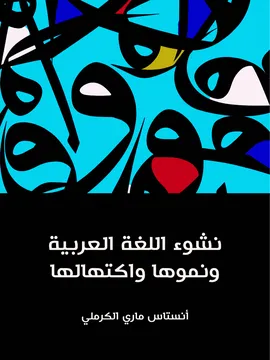

نشوء اللغة العربية ونموها واكتهالها

قراءة عربية أصلية محددة النطاق في الصفحات 21 إلى 26 من ملف PDF المرتبط، وليست تلخيصا كاملا للكتاب. نناقش ما تدعمه هذه المقاطع فقط.
عندما يلتقي مصطلح العرب بمصطلح الغرب
يتتبع الكرملي نظريته في وحدة النشأة بين الألسنة: لما كان وضع الكلم مبنيًا على محاكاة الطبيعة، وعلى الهجاء الواحد في أغلب الأحايين، قد يتفق مصطلح العرب ومصطلح أبناء الغرب إذا اتفق الخاطران في توهم صوت الطبيعة، ولا يكون هذا إلا إذا كان ثم هجاء واحد أو هجاءان لا أكثر. فمثال الهجاء الواحد قول العرب «ردّ»، ولا جرم أن أصلها «رَدْ» بفتح فسكون، وهي بعينها في اللاتينية فعل الرَّد المعروف بكاسعته التي تكسع بها كثير من أفعالهم؛ فليست صيغته اللاتينية إلا «رَدْ» العربية لا غير. ومثال ما عندهم وعندنا من الأسماء لفظة «الناحية» اللاتينية بإضافتها، فقولهم فيها ينظر إلى لفظتنا «رجا» أو «رجاء»، على أن فقهاء تلك اللغة يقولون إنها مشتقة عندهم من فعل آخر، ونحن لا نوافقهم كما يرى القارئ. ومن أفعال لغة اليونان فعل بمعنى ساق، فهي العربية «حجا» بمعنى ساق، ومنه قولهم: حجت الريح السفينة أي ساقتها، وقولهم هذا من باب التنظير والتمثيل لا من باب التقييد والتخصيص. ومن الأسماء لفظة الهلنين في القزم والرجل الضعيف التي نقلها الرومان إلى لغتهم، فحار فيها المقيسون.
زاوية وحدود القراءة
قراءة موجزة من ص ٢١ إلى ص ٢٦ من أصل ٢٠٦ صفحة، تعرض أواسط الكتاب، لا الكتاب كاملًا.
الطبعة والقراءة
هذه النسخة من الكتاب صادرة ومتاحة مجانًا من مؤسسة هنداوي بشكل قانوني؛ حيث إن نص الكتاب يقع في نطاق الملكية العامة تبعًا لقوانين الملكية الفكرية.
تنزيل PDF المجاني ↓ القراءة والمصدر الرسمي ↗